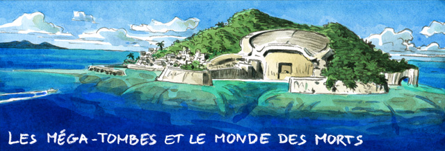
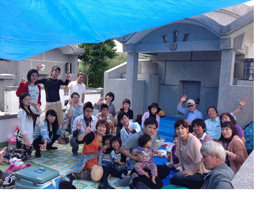
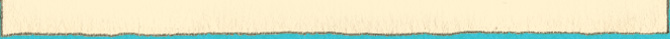
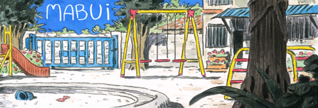
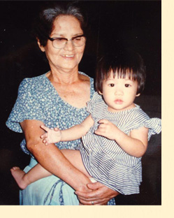

Ces derniers temps, j'ai souvent rendu visite à ma grand-mère dans la maison de retraite où elle réside.
Nous sommes en Octobre et, ici à Okinawa, les typhons ont mis fin à la chaleur de l'été. Un jour de vent,
j'ouvrai la fenêtre de sa chambre pour laisser entrer un peu d'air frais. Mais ce que je vis dehors me scandalisa :
deux méga-tombes. « Cette vue est un affront pour les mourants ! » hurlai-je.
Après avoir vécu si longtemps en occident, j'avais oublié que ces tombes sont partout : près des centres commerciaux,
des zones résidentielles, des hôtels de luxe et même à l'intérieur des bases américaines.
Non seulement elles sont partout mais elles sont gigantesques.
Elles ne sont pas discrètes comme les tombes japonaises ou celles des cimetières occidentaux.
La raison en est qu'à l'opposé des tombes habituelles, celles-ci sont conçues pour héberger une famille entière.
Leur apparence est plutôt étrange : elles sont arrondies pour ressembler à un ventre, peut-être pour rappeler à tous que
quand on meurt, on retourne dans le ventre de notre mère. Bien entendu, ce n'est pas tant une question d'anatomie qu'une métaphore,
un symbole du « retour chez soi ».
Peut-être ce concept est-il difficile à saisir pour qui vit ailleurs dans le monde mais, à Okinawa, la mort n'est ni sacrée ni révoltante.
Elle fait partie de nos vies. Aussi longtemps que vivrez, il vous sera rappelé que des morts habitent près de vous.

J'ai été élevée dans le christianisme, ce qui est assez rare ici et ne concerne que 1% de la population.
Ainsi, dans mon enfance, je fus parfois témoin du choc entre ces deux croyances. « Vous, les chrétiens, vous êtes des paresseux !
Vous pensez qu'après votre mort vous pourrez vous reposer éternellement au paradis ? Absurde ! »
Je me souviens encore de mon grand-père hurlant cela à ma mère. En fait, il vaut mieux oublier le concept de « reposer en paix »
à Okinawa car il existe un grand nombre de traditions pour occuper les morts. Chaque année, les membres de la famille se réunissent
devant la tombe de leurs ancêtres pour une fête de folie. J'ai participé à de nombreuses fêtes dans mes années d'études et croyez-moi
aucune n'égalait cette fête des tombes. Mais apparemment, ce n'est pas assez. En Août, il y a une autre grosse fiesta pour les morts.
Cette fois, cela dure trois jours. Nous, les vivants, devons offrir aux morts des fruits coûteux et une monnaie spéciale appelée Uchikabi.
J'ignore ce qui m'arrivera à ma mort. Personne ne sait. Néanmoins, quand je longe l'une de ces vieilles et pathétiquement inutiles
méga-tombes, je ne peux m'empêcher d'être charmée. Ces croyances et rituels, en apparence inutiles, sont réconfortants d'une étrange
manière. Les tombes sont les créations de notre imagination, l'effort sans fin pour imaginer un monde encore inconnu.
Je crois que s'il y a une chose positive que nous, humains, partageons tous, c'est le pouvoir de l'imagination.
Même la science et la logique ont commencé en rêvant d'inconnu. Peut-être, de temps en temps, trouvons-nous de la beauté en un tel
pouvoir.
Mais Okinawa se transforme à une telle vitesse. On m'a dit qu'un tram et qu'un grand parc d'attraction (Universal Studio of Japan)
allaient être construits. Les politiciens hurlent au « changement » et à la « prospérité ».
Okinawa vise à être plus pratique autant pour les locaux que pour les touristes. Mais, en urbanisant l'île,
finiront-ils par détruire les méga-tombes et nos folles « fiesta des morts » ? C'est plus que probable.
En y réfléchissant, elles sont ce qu'il y a de moins utile à la prospérité. Mais l'île sans ses tombes est comme un océan sans rivage.
Mon unique souhait est qu'un jour la vague de la prospérité apprendra comment embrasser le pouvoir de l'imagination.
 Ryoko Kokuba est originaire d'Okinawa.
Elle est décidée à promouvoir la culture de son île à travers les créations
artistiques qui s'en inspirent.
Ryoko Kokuba est originaire d'Okinawa.
Elle est décidée à promouvoir la culture de son île à travers les créations
artistiques qui s'en inspirent.


Le "Mabui " (マブイ), ou "esprit", est un concept clé dans la religion des Ryukyu. C'est l'essence du Soi, à peu près semblable à l'âme ou au mana. Tout comme l'âme dans de nombreuses traditions, le mabui est immortel. De même, il est ce qui définit une personne et la rend unique." via Wikipedia
Lorsque j'étais toute petite, mes grands-parents s'occupaient de moi.
Mes parents s'étaient séparés avant ma naissance et ma mère devait travailler à temps plein.
Ainsi, à peine née, j'étais déjà une habituée de la garderie publique.
De cette époque je ne garde que le souvenir flou de mon dégoût pour cette institution.
Le reste, j'ai pu l'extrapoler grâce aux lettres échangées entre ma mère et le personnel.
“13 août, ensoleillé. Aujourd'hui, Ryoko-chan a été ronchonne toute la journée. Après la sieste, elle a mordu un de ses camarades.”
Il y a plusieurs lettres semblables, preuve que j'étais une récidiviste.
A mon avis, j'étais simplement angoissée. Qui ne le serait pas ?
Si vous passiez les 4 premières années de votre vie au milieu d'une quarantaine d'enfants turbulents,
constamment exposé à des épidémies de varicelle et d'oreillons, vous aussi, vous vous plairiez à mordre.

Dans cette existence désagréable, il y avait malgré tout un moment que j'aimais.
Quand l'horloge pointait 5 heures de l'après-midi, ma mamie venait me chercher.
Elle n'était jamais en retard. Ma mamie m'attendait au portail à 5 heures précises.
Ma mamie était l'incarnation de l'amour en ce monde.
Sa tendresse, son odeur, son sourire, sa voix douce, tout en elle attestait que ma vie n'était pas une prolongation de la garderie.
“Où est ton Mabui, ma chérie ? Tu l'as perdu ?” Chaque jour, devant le portail, elle me posait la même question.
Alors nous commencions notre rituel de “chasse”, marchant autour d'une aire de jeu pour retrouver mon Mabui perdu.
Ma mamie le retrouvait rapidement mais, moi, je n'étais pas très bonne à ce jeu. “Ça m'a demandé presque 75 ans, ma chérie.”
Elle avait l'habitude de plaisanter sur son âge alors qu'elle l’attrapait avec précaution dans ses mains.
Puis, elle le remettait dans mon corps en chantant : “ Mabuya Mabuya mudimiso-re” (Mabui, Mabui, reviens je t'en prie).
Je me souviens comme je me sentais forte après l'avoir retrouvé.
Grâce à ce rituel de chasse au Mabui avec ma mamie, j'avais commencé à comprendre qu'il y avait quelque chose en moi,
immunisé contre la varicelle et peut-être aussi contre tous mes malheurs.
J'appris aussi que cette chose pouvait facilement être perdue et que seul un grand amour permettait de la retrouver.
Le temps a passé. Je ne fréquente plus ce bac-à-sable de 15 m², équipé de toboggans et de balançoires.
Peut-être ai-je perdu mon Mabui à Boston, Tokyo ou, qui sait, dans un bar décrépi à Paris.
Peu importe, j'ai tout mon temps. Il me reste approximativement 50 ans pour le retrouver.
Ryoko Kokuba est originaire d'Okinawa.
Elle est décidée à promouvoir la culture de son île à travers les créations
artistiques qui s'en inspirent.